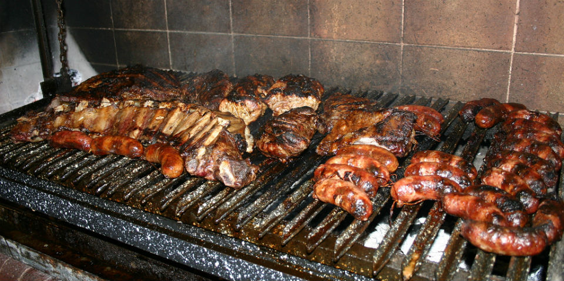

Asado
Martes, 15 de mayo de 2018

El asado, barbacoa, parrilla o parrillada es una técnica de cocción mediante la cual los alimentos (generalmente trozos de carne) son expuestos al calor de fuego o brasas para que se cocinen lentamente. El calor se transmite gradualmente al alimento, que por lo general está suspendido sobre el fuego o cerca de las brasas. El fuego se logra a partir de carbón vegetal o de madera, aunque hay también parrillas de gas. Las maderas más usadas son maderas duras como las de roble, mezquite, quebracho o coronilla, que arden a temperaturas altas y por un tiempo prolongado. Si bien la carne más empleada es la carne vacuna, también se asa carne de cerdo, de cordero, cabrito, pescado, pollo, langostinos y diversos embutidos.

Métodos
Martes, 15 de mayo de 2018
Un método frecuente de preparar un asado es el de la parrilla, donde las carnes se cocinan horizontalmente. Sin embargo, también es posible asar mediante otros métodos. Otro utensilio usado para asar es el espiedo, un asta o pica metálica en la que se pinchan los alimentos. Puede utilizarse un espiedo grande para asar un animal entero (cordero, cerdo, vaca) o espiedos pequeños para asar pollos o trozos de carne. Existen espiedos mecánicos que giran por medio de un motor, tanto sobre el fuego o la brasa como dentro de un horno. Es muy utilizado en la cocina brasileña. En Brasil, muchos de los restaurantes de carnes asadas utilizan el sistema rodizio, donde la carne se asa en espiedos que se llevan a la mesa, otras veces se sirven en platos, a las piezas, personalmente, sin llevarse los espiedos a la mesa o Churrascaria (carnes a la espada).
Una variante del método del espiedo es el "asado a la cruz" o "al asador". Las carnes se disponen al aire libre sobre las brasas de modo vertical sostenidas por un armazón que suele tener forma de cruz. En el sur de Argentina, un modo de asado a la cruz es el chiporro o asado de cordero patagónico. Con el método del espiedo en cruz también se realiza el llamado "asado con cuero", característico de la tradición gaucha argentina. El cuero le otorga un sabor característico a la carne y evita se seque. La cocción lleva varias horas con brasa a fuego lento para que el cuero no se queme.
Otro método de cocción muy utilizado en el sur de Chile es el asado al palo. Este consiste en atravesar al animal (por lo general en partes) con un palo largo y hacerlo girar lentamente sobre las brasas. Lo más típico es el asado de cordero al palo.
En España la técnica del asado es muy tradicional. Además de carne, se asan también pescados y verduras, va desde el tradicional asado castellano al horno (generalmente sobre cazuela de barro), hasta los espetos de pescado de la costa levantina.